バスの運賃の支払い
プリペイドカード（バスカード）
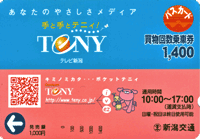
バスの運賃の支払いでは、プリペイドカード（バスカード）を利用する人が多いです。プリペードカードを使った方が、現金で支払うよりも得だからです（例えば、新潟交通の1000円のバスカードは、1400円分利用できます）。
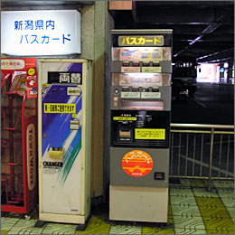
バスカードはバス会社ごとに発売されていて、違うバス会社のバスでは使うことができません。そのため、利用するバス会社にあわせて購入しなければなりません。バスカードは、バス会社の案内所（インフォメーション）やバスターミナルなどの自動販売機で買うことができます。
また、信号での停車時などにバスの運転手から直接買うこともできます。
- 乗客：すみません。1000円のバスカードをください。
- 運転手：はい。こちらです。［乗客にバスカードを手渡す］ありがとうございます。
ICカードと磁気カード
一般に、プリペイドカードには、リチャージ（残高の追加登録）可能なICカードと、残高がなくなると使い捨てる磁気カードとがあります。バス会社によって違いはありますが、バスカードには磁気カードが多く利用されています。
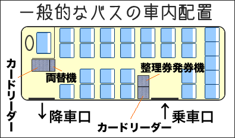
ICカードの場合は、台湾の悠遊卡（EasyCard）と同様、乗車時と降車時にカードリーダーにタッチします。
磁気カードの場合は乗車時と降車時に専用のカードリーダー（読み取り機）に挿入しなければなりません（路線が均一運賃の場合など、降車時のみでよいこともあります）。
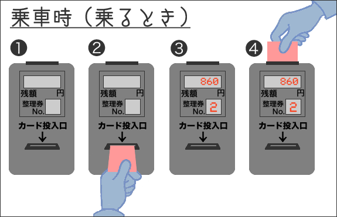
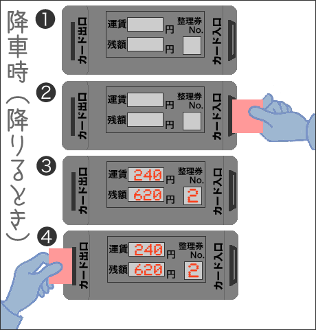
現金で支払う場合
現金で支払う場合は、乗車時に整理券（数字が印刷された小さな紙）をとります（路線が均一運賃の場合、整理券はありません）。
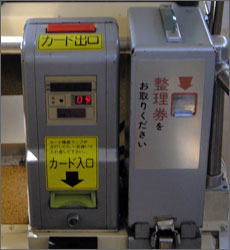
降車時には、降車口のところにある運賃表を見て、自分の整理券の番号のところに表示されている金額を運賃箱に入れます（整理券もいっしょに入れます）。
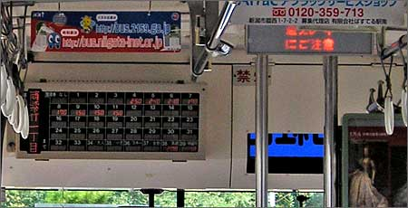
運賃箱は、おつりが出ないのが普通なので、ちょうどのお金を用意しなければなりません。小銭が足りないときは、バスの両替機を使って自分で両替します。なお、バスでの両替は、
- 100円硬貨→50円硬貨１枚と10円硬貨５枚
- 500円硬貨→100円硬貨４枚と50円硬貨１枚と10円硬貨４枚
- 1000円札→100円硬貨９枚と50円硬貨１枚と10円硬貨５枚
となるのが普通です。2000円札、5000円札、10000円札は両替できない場合が多いので注意が必要です。
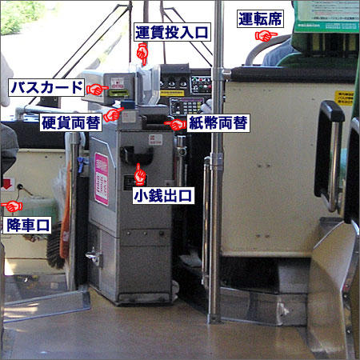
バスの乗り降り
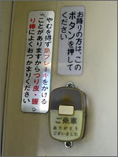
バスを利用するときには、次のような手順になります。
台湾と同じように、バスを降りるときには降車ボタンを押します。ただし、台湾のように自分が下りるバス停の直前に押したのでは、バス停に停まってもらえないこともあります（急に停車すると危険だからです）。自分が下りるバス停の一つ前のバス停をバスが通過した後で、降車ボタンを押しましょう。バス停を通過すると、次のバス停を案内する車内放送（アナウンス）があるので、それを聞いてから降車ボタンを押せばよいでしょう。
- 乗車時
-
- 整理券をとる
- バスカードをカードリーダーに通す
- 下りるバス停の一つ前のバス停を通過
- 次のバス停を案内する車内放送を聞いて、降車ボタンを押す
- 降車時
-
- 整理券と運賃を運賃箱に入れる
- バスカードをカードリーダーに通す
バスに乗車するときのアナウンス
- 車内放送（アナウンス）：整理券をお取りください。バスカードをご利用のお客様はカードリーダーにお通しください。
バスが発車した後のアナウンス
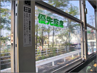
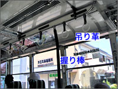
- 車内放送（アナウンス）：本日は中国JRバスをご利用いただきまして、ありがとうございます。このバスは郷田線、及美尾経由広島国際大学行きです。お乗り間違えのございませぬようご注意ください。走行中はやむをえず急ブレーキを使用する場合がございますので、お立ちの際はお近くの吊り革や握り棒などにおつかまりください。車内事故防止のため、座席の移動や小銭の両替はバスの停車中にお願いいたします。優先座席では、お年寄り、小さなお子様をお連れのお客様、お身体の不自由なお客様に座席をお譲りください。車内での携帯電話のご使用は、周りのお客様のご迷惑となりますのでご遠慮ください。次は西条栄町、西条栄町です。
バス停を通過したときのアナウンス
- 車内放送（アナウンス）：次は、尾形、尾形です。お降りの方はお知らせ下さい。
- 乗客：［降車ボタンを押す］ピンポ〜ン
- 車内放送（アナウンス）：次、停まります。危険ですので、バスが完全に停車してからお席をお立ちください。お降りの際、お忘れ物のございませぬようご注意願います。
バスを降りるとき
- バスの運転手：［バスを停車する］尾形です。車内、お忘れ物ございませぬようご注意ください。
- 乗客：［運賃を払う／バスカードを通す］
- バスの運転手：はい。ありがとうございました。
- 乗客：［バスを降りる］